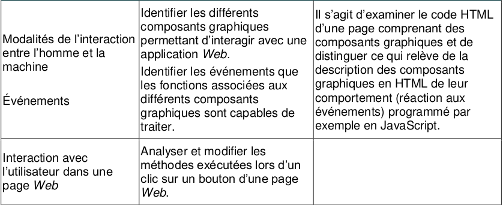

TP : Le site web d'une informaticienne⚓︎

Objectifs
Ce TP est l'entraînement guidé avant le Mini Projet : site Web. Vous allez construire pas à pas le site d'une informaticienne, avec exactement la même structure que celle attendue pour votre projet. À la fin, vous saurez :
- structurer un site de 4 pages avec
html5(balises<header>,<nav>,<main>,<footer>,<figure>) ; - renseigner les balises meta (encodage, auteur, mots-clés) ;
- relier vos pages avec des liens internes (relatifs) et des liens externes ;
- séparer strictement le fond (html) et la forme (css) ;
- faire valider vos pages au W3C (html5 et css3).
Durée : 2 à 3 séances. Travail : individuel.
Lien avec le mini-projet (à rendre le jeudi 5 novembre 2026)
Chaque exigence du mini-projet est travaillée dans ce TP :
| Exigence du mini-projet | Où la travailler dans ce TP |
|---|---|
| 4 pages : présentation, contexte historique, apports, impact | Parties 2 et 3 (index, contexte, apports, impact) |
| Balises meta : encodage, auteur, mots-clés | Exercice 4 |
Balises sémantiques <header> <nav> <footer> |
Exercices 4 et 5 |
| Images légendées, libres de droits, source citée | Exercices 6, 8 et 10 |
| Liens internes et externes | Exercices 5 et 9 |
| Séparer strictement fond et forme | Exercice 2 et partie 4 |
| HTML5 et CSS3 valides au W3C | Partie 5 |
| Sauvegarde à deux endroits | Exercice 0 |
Règles sur l'usage de l'IA
L'IA est autorisée, mais vous restez responsables de votre code. Pour chaque étape :
- vous devez pouvoir expliquer chaque ligne de ce que l'IA vous a proposé ;
- si l'IA propose une image par URL (
https://...), vous la téléchargez dansimg/et vous utilisez un lien relatif ; - si l'IA vous donne du code qui « marche chez elle » mais pas chez vous, c'est une occasion de comprendre pourquoi (chemin, nom de fichier, balise non fermée...) ;
- tenez un journal de bord (voir la fin du TP).
Partie 1 : Choisir et préparer⚓︎
1.1 Le personnage du TP⚓︎
Pour ce TP, nous travaillons sur Karen Spärck Jones, pionnière de la recherche d'information (les ancêtres des moteurs de recherche).
Pourquoi elle ?
Les personnages de votre mini-projet sont ceux du tableau « Figures de l'informatique ». Pour que le TP ne se transforme pas en copie de votre projet, nous travaillons sur une personne qui n'y figure pas. Vous réutiliserez la démarche, pas le contenu.
1.2 Créer l'arborescence⚓︎
Exercice 0
Créez l'arborescence suivante :
site_sparckjones/
├── index.html (présentation de la personne)
├── contexte.html (contexte historique)
├── apports.html (apports scientifiques ou technologiques)
├── impact.html (impact pour la société)
├── sources.html (sources et crédits)
├── css/
│ └── style.css
└── img/
Puis sauvegardez-la à deux endroits différents (clé USB, espace réseau, dépôt git...). Vous referez une sauvegarde à la fin de chaque séance.
- pas d'espaces, pas d'accents, pas de majuscules dans les noms de fichiers et dossiers ;
- jamais de
\dans les chemins web : toujours/; - tous les fichiers du site restent dans le dossier du site.
Règle d'or : séparer strictement le fond et la forme
- Le fichier html décrit le contenu et sa structure (titre, paragraphe, liste, image...).
- Le fichier css décrit l'apparence (couleurs, tailles, alignements, marges...).
Donc dans vos pages html, interdits : l'attribut style="...", l'attribut align, les balises <center> et <font>, et les <br> utilisés « pour faire de l'espace ». Tout cela se fait en css.
Partie 2 : Analyser un site existant⚓︎
Récupérez le dossier exemple_berners_lee fourni par le professeur : c'est le site d'un élève de première NSI sur Tim Berners-Lee. Ouvrez hlfo1.html dans votre navigateur et naviguez.
Exercice 1 : lire un site
Répondez par écrit (quelques mots suffisent) :
- Combien de pages le site contient-il ? Quelle est la page d'accueil ?
- Quels éléments se retrouvent identiques sur toutes les pages ?
- Combien y a-t-il de fichiers
css? Que remarquez-vous en les comparant ? - Où sont rangées les images ? Les liens vers les images sont-ils absolus ou relatifs ?
- Quels liens s'ouvrent dans un nouvel onglet ? Avec quel attribut ?
- Ouvrez l'inspecteur (
F12) et modifiez une couleur de la barre de navigation : quelle propriétécssavez-vous changée ?
- 5 pages :
hlfo1.html(accueil),biographie1.html,carriere.html,actualite1.html,source1.html. - La barre de navigation (
navbar) et la signature en bas de page. - Deux fichiers (
style1.cssetstyleOnglet.css) : beaucoup de code est dupliqué entre les deux. - Dans le dossier
Images/, avec des liens relatifs (Images/timBernersLee.png). - Les liens externes, avec
target="_BLANK". - Par exemple
background-imageoucolorsur.btn/div.
Exercice 2 : la chasse aux erreurs
Ce site fonctionne, mais son code contient des erreurs et des maladresses. Vous allez les repérer.
- Rendez-vous sur le validateur W3C, envoyez
actualite1.htmlet notez 3 erreurs signalées. - Ouvrez
test.html: repérez au moins 3 erreurs dans ces 3 lignes. - Fond et forme. Cherchez dans
hlfo1.html,biographie1.htmletactualite1.htmlles endroits où de la mise en forme a été écrite dans le html (indice : cherchezalignetstyle=). Combien en trouvez-vous ? Où auraient-ils dû être écrits ? - Dans
style1.css, le sélecteurdiv { ... }fixeheight: 65pxet un fond dégradé. Que se passe-t-il pour tous les<div>de la page ? Pourquoi est-ce risqué ? - Dans
actualite1.html, observez les balises<a>de la barre de navigation. Que remarquez-vous ? - Comparez
target="_BLANK"dansactualite1.htmlettarget="BLANK"dansbiographie1.html. Quelle différence de comportement ? - Le fichier de fond s'appelle
fond d'ecran gris3.jpg. Pourquoi ce nom est-il une mauvaise idée ? - Les textes longs sont placés dans des
<h2 class="txt"><p>...</p></h2>. Quel est le problème ?
- Exemples :
<footer>placé après</body>, balises<a>non fermées (donc imbriquées),<p>dans un<h2>. <input type= button>est fermé par</button>(ce n'est pas la même balise),<head>jamais fermé,<body>absent,<html>jamais fermé, pas de<title>, une image dans le<head>, etsrc="timBernersLee.jpg"alors que l'image est dansImages/.- Par exemple :
align="center"sur la<div class="navbar">,align="left"sur les<img>de la barre,align="center"sur l'image dehlfo1.html,style="text-align: center;"sur un<p>, et des<br><br>pour espacer les paragraphes. Tout cela relève du css (text-align,float,margin,padding...). - Il s'applique à tous les
div: un futurdiv(carte, bloc de texte...) héritera d'une hauteur de 65px et d'un dégradé. Mieux vaut un sélecteur ciblé (header,nav,.navbar). - Plusieurs
<a>ne sont jamais refermées : les liens deviennent imbriqués, ce qui est invalide. _BLANKouvre un nouvel onglet.BLANK(sans underscore) est le nom d'une fenêtre : le lien s'ouvre bien dans un onglet nommé « BLANK », mais réutilisé par tous les liens de ce type : ce n'est pas le comportement voulu.- Espaces et apostrophe : problèmes dans les URL, dans les scripts, et lors d'un hébergement. Préférer
fond_gris.jpg. - Un titre
<h2>ne sert pas à contenir un long paragraphe : un<p>dans un<h2>est invalide et mauvais pour l'accessibilité. Il faut un<p class="txt">.
Exercice 3 : ce site répond-il aux attendus du mini-projet ?
Vous allez faire l'audit de ce site avec la grille du mini-projet.
Pour chaque exigence, répondez par oui / non / en partie et justifiez.
- 4 pages : présentation, contexte historique, apports, impact pour la société.
- Balises meta : encodage, auteur, mots-clés.
- Balises sémantiques
<header>,<nav>,<footer>. - Images légendées et source citée.
- Liens internes et externes.
- Fond et forme séparés strictement.
- HTML5 valide.
- En partie : il y a 5 pages (biographie, carrière, actualité, sources, accueil), mais pas de « contexte historique » ni d'« impact pour la société » clairement identifiés.
- En partie : l'encodage (
charset) est présent, mais ni auteur ni mots-clés. - Non : tout est en
<div>(la barre de navigation est undiv class="navbar") ; seul<footer>est utilisé, et de manière invalide dansactualite1.html. - En partie : les images ont un
alt, mais aucune n'est légendée (pas de<figure>), et leurs sources / licences ne sont pas citées. - Oui : liens internes (navigation) et liens externes (Wikipedia, articles).
- Non :
align,style=et<br>dans le html. - Non : les validations échouent (voir exercice 2).
Partie 3 : Le squelette HTML⚓︎
3.1 Un squelette complet : meta + sémantique⚓︎
Exercice 4
Dans index.html, écrivez le squelette de la page. Il doit contenir :
<!DOCTYPE html>,<html lang="fr">;- dans
<head>: l'encodage, l'auteur (votre nom), des mots-clés, une description, un<title>; - dans
<body>: un<header>(avec le<h1>), un<main>, un<footer>(votre nom et « 1ère NSI »).
Dans <main>, placez une phrase d'accroche d'un paragraphe et une image légendée (voir exercice 6).
Les balises meta ont la forme <meta name="author" content="..."> ; l'encodage s'écrit <meta charset="utf-8">. Voir la documentation MDN sur les balises meta.
<!DOCTYPE html>
<html lang="fr">
<head>
<meta charset="utf-8">
<meta name="author" content="Prénom Nom">
<meta name="description" content="Site de présentation de Karen Spärck Jones, pionnière de la recherche d'information.">
<meta name="keywords" content="Karen Spärck Jones, informatique, recherche d'information, TF-IDF">
<title>Karen Spärck Jones, pionnière de la recherche d'information</title>
</head>
<body>
<header>
<h1>Karen Spärck Jones</h1>
</header>
<main>
<p>Informaticienne britannique, pionnière de la recherche d'information.</p>
</main>
<footer>
<p>Réalisé par Prénom Nom, 1ère NSI</p>
</footer>
</body>
</html>
Question
Quelle est la différence entre <header> (de la page) et <head> ? Entre <main> et <body> ?
3.2 La barre de navigation : liens internes⚓︎
Exercice 5
Dans le <header> de index.html, après le <h1>, ajoutez une barre de navigation <nav> contenant 5 liens relatifs : Présentation, Contexte, Apports, Impact, Sources.
Créez ensuite les 4 autres pages avec le même squelette (meta, header, main, footer) et recopiez la même barre dans chacune d'elles.
Tous les fichiers de pages sont dans le même dossier : un lien relatif se limite au nom du fichier, par exemple href="contexte.html".
<nav>
<a href="index.html">Présentation</a>
<a href="contexte.html">Contexte</a>
<a href="apports.html">Apports</a>
<a href="impact.html">Impact</a>
<a href="sources.html">Sources</a>
</nav>
Question
Si vous modifiez un lien de la barre de navigation, combien de fichiers devez-vous modifier ? Que peut-on en conclure sur les limites d'un site statique ? (on y répondra avec PHP)
Partie 4 : Le contenu des pages⚓︎
Rédaction
Les textes doivent être rédigés par vous. Vous pouvez demander à l'IA des pistes, mais pas copier-coller Wikipedia ni un texte généré sans le relire, le vérifier et le reformuler. Recoupez au moins 2 sources.
4.1 Présentation (index.html)⚓︎
Exercice 6
Dans <main> de index.html, ajoutez :
- un
<h2>« Qui est Karen Spärck Jones ? » ; - 2 ou 3 paragraphes (naissance, études, parcours en quelques lignes) ;
- un portrait légendé : cherchez une image libre de droits sur Wikimedia Commons, notez l'auteur et la licence, téléchargez-la dans
img/et renommez-la (ex.portrait.jpg).
Quelques repères (à vérifier et à reformuler) :
| Repère | Information |
|---|---|
| Naissance | 26 août 1935, Huddersfield (Angleterre) |
| Décès | 4 avril 2007 |
| Études | Université de Cambridge |
| Doctorat | 1964, Cambridge |
Une image avec sa légende se code avec <figure> et <figcaption> :
<figure>
<img src="img/portrait.jpg" alt="...">
<figcaption>...</figcaption>
</figure>
<main>
<h2>Qui est Karen Spärck Jones ?</h2>
<p>Née en 1935 à Huddersfield...</p>
<figure>
<img src="img/portrait.jpg" alt="Portrait de Karen Spärck Jones">
<figcaption>Karen Spärck Jones. Photo : auteur, licence CC BY-SA.</figcaption>
</figure>
</main>
4.2 Contexte historique (contexte.html)⚓︎
Exercice 7
Dans contexte.html, répondez à la question : dans quel monde vit-elle quand elle commence ses travaux ?
- Un
<h2>et au moins deux<section>, chacune avec un<h3>(par exemple : « L'informatique des années 1950-1960 », « Le traitement automatique des langues »). - Un tableau
<table>de repères chronologiques (au moins 5 lignes, avec<thead>et<tbody>) sur le contexte (machines, événements, découvertes de l'époque). - Une citation
<blockquote>(avec sa source) d'un témoin ou d'un acteur de cette époque.
<table>
<thead>
<tr><th>Année</th><th>Événement</th></tr>
</thead>
<tbody>
<tr><td>...</td><td>...</td></tr>
</tbody>
</table>
4.3 Apports scientifiques ou technologiques (apports.html)⚓︎
Exercice 8
Dans apports.html :
- Un
<h2>et un paragraphe qui explique, avec vos mots, son apport principal. Pour Karen Spärck Jones, il s'agit de l'idée qui est à l'origine du « TF-IDF » (1972). À vous de chercher ce que cela signifie. - Une liste à puces
<ul>de ses autres contributions, prix ou distinctions (3 à 5 éléments). - Un schéma, une capture ou une image légendée (
<figure>+<figcaption>) qui illustre cet apport. - Un lien interne vers la page
contexte.html, dans une phrase (ex. « comme on l'a vu dans le contexte historique »).
<p>Ces travaux s'inscrivent dans le <a href="contexte.html">contexte historique</a> de l'époque.</p>
4.4 Impact pour la société (impact.html) : liens externes⚓︎
Exercice 9
Dans impact.html :
- Un
<h2>et 2 ou 3 paragraphes : en quoi ses travaux influencent-ils les outils que vous utilisez aujourd'hui (moteurs de recherche, etc.) ? Quels hommages ou récompenses a-t-elle reçus ? - Au moins 2 liens externes vers des articles qui parlent d'elle, ouverts dans un nouvel onglet.
<a href="https://fr.wikipedia.org/wiki/Karen_Sp%C3%A4rck_Jones" target="_blank" rel="noopener">Wikipedia</a>
L'attribut rel="noopener" est une bonne pratique de sécurité pour les liens avec target="_blank". Pensez à tester que le lien fonctionne.
Question
Ces liens externes sont-ils des liens absolus ou relatifs ? Pourquoi ne peut-on pas faire autrement ?
4.5 Sources et crédits⚓︎
Exercice 10
Dans sources.html, listez avec <ul> :
- les sites consultés, sous forme de liens cliquables ;
- les crédits des images : titre, auteur, licence, lien vers la page d'origine.
<h2>Sites consultés</h2>
<ul>
<li><a href="https://fr.wikipedia.org/..." target="_blank" rel="noopener">Wikipedia</a></li>
</ul>
<h2>Crédits des images</h2>
<ul>
<li>Portrait : auteur, licence CC BY-SA 4.0, <a href="..." target="_blank" rel="noopener">source</a></li>
</ul>
Point d'étape
Avant de passer au CSS, votre site doit être navigable (tous les liens de la barre mènent à la bonne page) et valide au W3C (voir partie 5, vous pouvez déjà tester). À ce stade, il est laid : c'est normal. Faites vérifier par le professeur.
Partie 4*5 : La mise en forme avec CSS⚓︎
5.1 Relier la feuille de style⚓︎
Exercice 11
Dans le <head> de chacune des 5 pages, ajoutez la balise qui relie la feuille de style css/style.css.
Dans style.css, mettez provisoirement une seule règle pour vérifier que la liaison fonctionne :
body {
background-color: lightgray;
}
<link rel="stylesheet" href="css/style.css">
Le fichier css est dans le sous-dossier css/ : le lien est relatif à la page html.
Une seule feuille pour tout le site
Dans le site exemple, deux feuilles de style quasi identiques ont été créées. Vous n'en écrirez qu'une. Si une page doit avoir un look différent, on utilise une classe, pas un deuxième fichier.
5.2 Le corps de la page et les textes⚓︎
Exercice 12
Dans style.css, écrivez des règles pour :
body: police, couleur de fond, couleur du texte, marges à0.h1,h2: couleur, taille, centrage.p: texte justifié, largeur maximale lisible (max-width) et centré avecmargin: 0 auto, un peu d'espace autour (padding).blockquote: bordure à gauche, texte en italique.
body {
margin: 0;
font-family: Georgia, "Times New Roman", serif;
background-color: #f4efe9;
color: #222;
}
h1, h2 {
text-align: center;
color: #5a2d0c;
}
h1 {
font-size: 2.5em;
}
p {
max-width: 800px;
margin: 1em auto;
padding: 0 20px;
text-align: justify;
line-height: 1.5;
}
blockquote {
max-width: 700px;
margin: 1.5em auto;
padding-left: 20px;
border-left: 5px solid #5a2d0c;
font-style: italic;
}
5.3 L'en-tête et la barre de navigation⚓︎
Exercice 13
Mettez en forme header et nav :
- un fond sombre (couleur unie ou dégradé) et le texte centré pour le
header; - des liens blancs, sans soulignement (
text-decoration: none), avec de l'espace autour (padding) ; - un effet au survol : changement de fond ou bordure basse colorée (
:hover) ; - un lien « page courante » : ajoutez
class="actif"sur le lien de la page où l'on se trouve et donnez-lui un style distinct.
Pour les liens d'une nav, pensez à display: inline-block.
Cible précisément : nav a { ... } signifie « les liens <a> situés dans un <nav> ». C'est mieux qu'un sélecteur général sur div ou a.
header {
background-image: linear-gradient(to right, #5d5d5d, #2d2d2d);
padding: 10px 0;
text-align: center;
}
header h1 {
color: white;
}
nav a {
display: inline-block;
padding: 10px 25px;
color: white;
text-decoration: none;
font-size: 1.2em;
}
nav a:hover {
background-color: rgba(153, 153, 153, 0.5);
border-bottom: 4px solid #ffe136;
}
nav a.actif {
border-bottom: 4px solid #ffe136;
}
Dans chaque page, le lien de la page courante reçoit class="actif". Par exemple, dans contexte.html : <a href="contexte.html" class="actif">Contexte</a>.
5.4 Images, tableau, pied de page⚓︎
Exercice 14
- Images : largeur maximale (
max-width: 100%), coins arrondis (border-radius), bordure. - Figures : centrez les
<figure>(marges automatiques), légendes centrées en italique. - Tableau : bordures (
border,border-collapse: collapse), en-têtes colorés, lignes alternées (tr:nth-child(even)). - Pied de page : fond, couleur de texte, alignement, marge supérieure.
img {
max-width: 100%;
border: 3px solid #5a2d0c;
border-radius: 10px;
}
figure {
max-width: 400px;
margin: 20px auto;
text-align: center;
}
figcaption {
font-style: italic;
}
table {
margin: 20px auto;
border-collapse: collapse;
}
th, td {
border: 1px solid #5a2d0c;
padding: 8px 15px;
}
th {
background-color: #5a2d0c;
color: white;
}
tr:nth-child(even) {
background-color: #e8dccf;
}
footer {
margin-top: 40px;
padding: 10px 20px;
background-color: #2d2d2d;
color: #ffeddf;
text-align: right;
}
Question de réflexion
Quelle différence entre #portrait (identifiant) et .portrait (classe) ? Dans quel cas utilise-t-on l'un ou l'autre ? (Indice : un id doit être unique dans la page.)
Partie 6 : Vérifier et valider⚓︎
Le mini-projet exige des pages valides W3C (html5) et un css conforme au standard CSS3.
Exercice 15 : la check-list
Avant de rendre votre site, vérifiez chacun de ces points :
Validité
- Les 5 pages passent le validateur HTML du W3C sans erreur.
- La feuille
style.csspasse le validateur CSS du W3C sans erreur (profil CSS niveau 3).
Fond / forme
- Faites une recherche (
Ctrl+F) dans chaque page html : aucunstyle=, aucunalign, aucun<center>, aucun<font>, aucun<br>de mise en page.
Contenu exigé par le mini-projet
- 4 pages cohérentes (présentation, contexte, apports, impact) + sources.
- Meta : encodage, auteur, mots-clés dans chaque page.
-
<header>,<nav>,<main>,<footer>dans chaque page. - Images légendées, avec
alt, libres de droits, source citée. - Liens internes et externes, tous testés.
Fichiers
- Aucun chemin absolu local (
C:\...) ni image appelée par URL. - Aucun nom de fichier avec espace, majuscule ou accent.
- Une seule feuille de style, liée dans les 5 pages.
- Test du déménagement : copiez tout le dossier sur une clé USB ou ailleurs, ouvrez
index.htmldepuis cette copie : tout doit fonctionner.
Partie 7 : Passer au mini-projet⚓︎
Votre vrai projet reprend exactement la même démarche, avec le personnage qui vous a été attribué dans le tableau « Figures de l'informatique ».
Ce que vous réutilisez
- Même arborescence :
index.html,contexte.html,apports.html,impact.html,sources.html,css/style.css,img/. - Même squelette (meta +
header/nav/main/footer) copié depuis ce TP. - Même méthode : une étape, une vérification W3C, une sauvegarde.
- Même check-list (exercice 15) avant de rendre.
Ce que vous ne réutilisez pas
- Les textes et les images du TP : ceux de votre projet sont à rédiger et à chercher par vous.
- Le design : c'est l'occasion de faire un style qui vous ressemble (couleurs, polices, mise en page).
Pour aller plus loin que le TP
Le mini-projet demande de raconter une histoire. Posez-vous trois questions pour chaque page :
- Présentation : qui est cette personne, en une minute de lecture ?
- Contexte historique : dans quel monde vit-elle, que se passe-t-il autour d'elle ?
- Apports et Impact : qu'a-t-elle inventé, et en quoi cela change-t-il votre vie ?
📆 Rendu du mini-projet : jeudi 5 novembre 2026. Retrouvez les consignes et les critères d'évaluation sur la page Mini Projet : site Web.
Rendu et évaluation du TP⚓︎
À rendre : le dossier complet du site compressé (.zip), nommé NOM_Prenom_tp_site.zip, ainsi que le journal de bord (une page).
Journal de bord
Listez 3 prompts que vous avez envoyés à l'IA. Pour chacun :
- ce que vous avez demandé ;
- ce que l'IA a répondu de juste ;
- ce que vous avez dû corriger ou ne pas compris (et comment vous l'avez résolu).
Barème indicatif du TP (/20)
| Critère | Points |
|---|---|
| Structure html5 valide (5 pages), meta et balises sémantiques | 5 |
| Navigation et liens internes / externes (aucun lien cassé, test du déménagement réussi) | 3 |
Images : dossier img/, alt, légendes, sources et licences citées |
3 |
| CSS conforme, fond/forme séparés, une seule feuille | 4 |
| Contenu : textes rédigés, exacts, sources recoupées | 3 |
| Journal de bord (usage de l'IA compris et critiqué) | 2 |
| Bonus | + 2 max |
Ce barème est un entraînement : le mini-projet sera évalué avec ses propres critères (voir la page du projet).
Et après ?
Notre site est statique : pour changer le menu, il faut modifier 5 fichiers. Dans la suite du thème Web, nous verrons comment un langage côté serveur (PHP) permet de ne l'écrire qu'une seule fois.